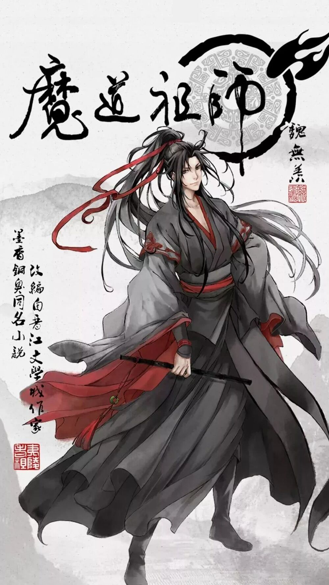

Characters
Wei Ying
Wei Ying (魏婴 Wèi Yīng), household name Wei Wuxian (魏无羡, Wèi Wúxiàn) is the founder of the Devil Cult and a former adept of the Yunmeng Jiang Sect. The only son of Wei Changze and Canse Sanren.
Also known as Elder Yiling (夷陵老祖, Yílíng Lǎozǔ), he died during the siege of Mount Luanzang, thirteen years before the main events. Was summoned into the body of Mo Xuanyu through a sacrificial ritual. The truth behind Wei Wuxian's death is revealed throughout the story of the novel, in which Wei Ying, along with his partner Lan Wangji, search for body parts throughout northern China.
Лань Ванцзи

Lan Zhan (蓝湛 Lán Zhàn), household name of Lan Wangji (蓝忘机, Lán Wàngjī). He is the Second Lord of the Lan clan. Also, has the title - Hanguang-Jun (含光君, Hánguāng-jūn) or Hanguang-Jun. Lan Wangji and his older brother, Lan Xichen, are called "Two Jades", which means two people who are good at something at about the same level.
Thirteen years later, Lan Wangji still finds Wei WuXian, identifying his identity in Mo Xuanyu's body. As the story progresses, Lan Zhan and Wei Ying work together to investigate a mystical mystery involving a hand from Mo Village and clear Elder Yiling's name. At the end of the story, Hanguang-jun becomes Wei Wuxian's partner on the path of cultivation.
Цзинь Лин

Jin Ling (金凌, Jīn Líng), household name Jin Rulan (金如兰, Jīn Rúlán), heir to the Lanling Jin Sect. He is the only son of Jiang Yanli and Jin Zixuan and the nephew of Jin Guangyao and Jiang Cheng. At the end of the novel, he inherited the status of head of the order from his uncle.
Лань Сычжуй

Lan Sychezhui (蓝思追, Lán Sīzhuī) - Junior Adept in the Order of Gusu Lan.
Lan Sychewly, nee Ven Yuan (温苑, Wēn Yuàn), the last descendant of the destroyed Order of the Cishan Wen. Some of his relatives was the Strath of the Earth still during the legendary "annihilation of the Sun.", and later, and the last part died during the "siege of the mountain Luanjan." During the siege, the boy was somehow miraculously found himself in the Wooden Wood, which made it possible to escape, but, unfortunately, he picked up her fever. Lan Vanzzi found him and took him to the Order, having learned the ward of Wei Usayan in the child. Because of the experience of stress, the child absolutely forgot his past and began to live a new life. Then Hanguan-Jun gave him a different name - Lan Yuan (蓝愿, Lán Yuàn), and later bestowed and the second name - Sycheloup (思追)
Цзинь Гуанъяо

Jin Guangyáo (金瑶瑶, Jīn Guāngyáo) Need Meng Yao (孟瑶, Mèng Yáo) was the leader of the Order of Lanlin Jin after the death of Jin Guanzhan. As a member of the convicted Triad, he was also a consolidated brother Jin Jesyuan and Uncle Jin Lina.
Thanks to the strength of the Order of Lanlin Jin before and during his reign, he became the first major agriculture. He is also famous under his title of Lianfan-Zong.
Вэнь Нин

Wen Ning (温宁, Wēn níng), polite name - Wen Tsyunlin (温琼温琼, Wēn qiónglín), in his lifetime was the adept of the Order of the Cishan Wen. After death, Wei Santa was transformed into the Lyut Man and became known as a ghost general (鬼 将军, guǐ jiāngjūn). Was the right hand of VEI.
Цзян Чэн

Jiang Chéng (江澄, Jiāng Chéng), the second name - Wanin (江晚吟, Wǎnyín) - the current head of the Order of Yunman Jiang, Sidie Wei Uushany. Has the title of Santa Shanshou (三毒 圣手, Sāndú Shèngshǒu).
It was he who led the four great orders: Yunman Jiang, Lanlyn Jin, Gusu Lan and Zinghe did not and destroyed the lair of the elder Ilia - Mount Luangzan.
Лань Сичэнь

Lan Huan (蓝涣, Lán Huàn), in the life of Lan Syric (蓝曦臣, Lán Xīchén) - the leader of the Order of Gusu Lan. He has the younger brother of Lan Vanzzi, who for three years younger than him. It is the title of ZEWU-JUN (泽芜君, Zéwú-Jūn).
Given that he was still young at the beginning of the annihilation of the Sun, Lan Syric was less than three years older than his younger brother Lanan Vanzzi. Together they are known as two jade clan Lan.